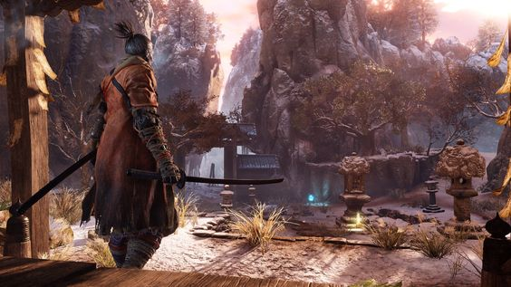
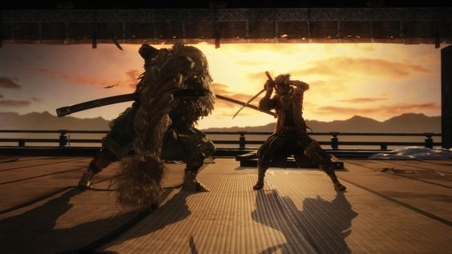
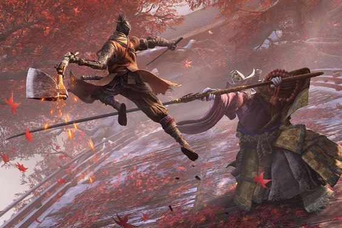

In Sekiro: Shadows Die Twice you are the “one-armed wolf”, a disgraced and disfigured warrior rescued from the brink of death.

Explore late 1500s Sengoku Japan, facing larger-than-life foes in a dark, twisted world.

Carve your own clever path to vengeance in the award-winning adventure from developer FromSoftware, creators of Elden Ring, Bloodborne, and the Dark Souls series.